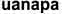

Сайт "Второй ум" создан в 2016 году, это молодой проект который желает развиваться также как человек. Нам нужны различные типы умов: Абстрактный, гуманитарный, математический, практический, художественный, синтетический, и обязательно все другие. Если вы хотите стать автором и предложить свои полезные советы отправляйте их на е-майл представленный внизу страницы.
Что написать в письме?
Можно поздороваться. ОБЯЗАТЕЛЬНО укажите тему.Кроме этого, нам бы хотелось знать о вас следующее:
Имя и фамилию. Статьи можете писать под псевдонимом.
Контакты. Скайп, аккаунт в соцсетях, e-mail, если тот, с которого идет письмо, не основной.
Город, в котором постоянно живете.
Расскажите о себе.
@yandex.ru